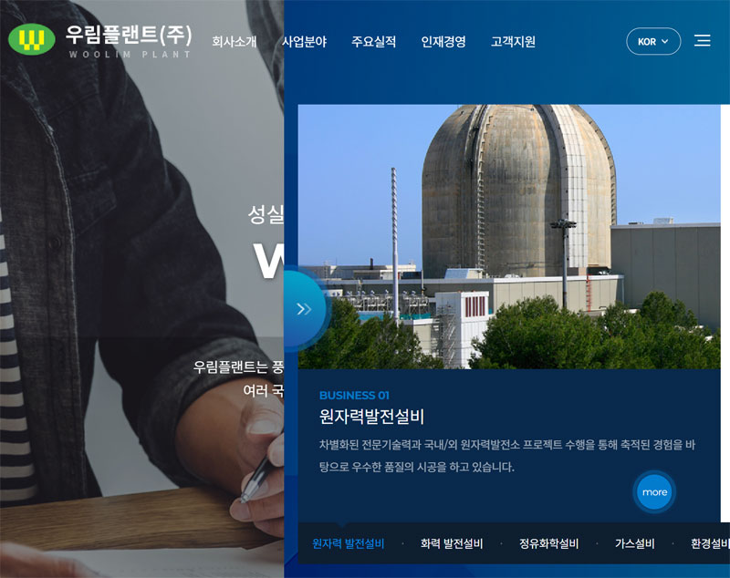
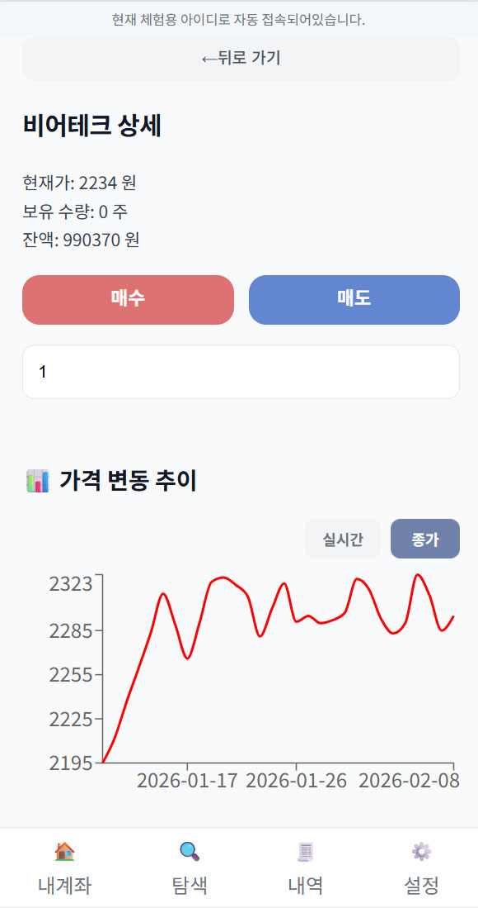
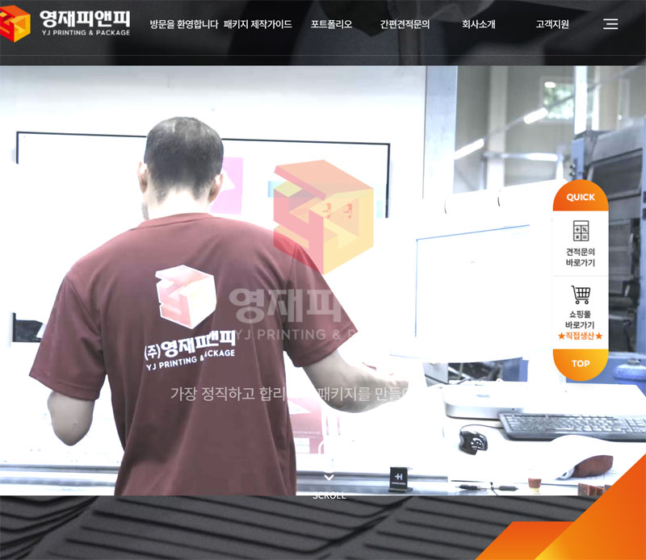

웹 서비스 기획과 운영을 중심으로
개발을 목적이 아닌 수단으로 활용해,
기획과 관리를 효과적으로 수행합니다.
“화면을 기반으로, 서비스의 흐름과 운영 정책을 설계합니다.”

전문건설업체 기업 웹사이트
중공업·플랜트 시공 기업의 전문성과 주요 실적을 효과적으로 전달하기 위해 메인 페이지 중심의 정보 구조로 사이트를 구성했습니다.
메인 화면에서 주요 콘텐츠가 단계적으로 확장되는 UI를 설계해, 페이지 전환 없이도 다양한 사업 영역과 실적을 탐색할 수 있도록 구성했습니다.
jQuery를 활용해 화면 전환, 콘텐츠 노출, 이미지 슬라이드 등 인터랙션을 직접 구현했으며, 사용자 행동에 따라 화면이 동적으로 변화하는 비동기적 UX 흐름을 구현했습니다.

주식 가상거래 웹 서비스 (개인 프로젝트)
Zoosik은 가상의 주식 거래 서비스를 기획한 프로젝트로, 사용자 행동에 따른 화면 흐름과 데이터 구조를 중심으로 설계했습니다.
React 기반 구조를 활용해 UI를 컴포넌트 단위로 구성하고, 상태 변화에 따라 화면이 비동기적으로 갱신되는 흐름을 이해하며 서비스 기획에 반영했습니다.
외부 API 연동 대신, 클라이언트에서 주가 변동을 시뮬레이션하는 구조로 구성해 서비스 흐름과 사용자 인터랙션 중심의 기획에 집중했습니다.

패키지 제작 기업 웹사이트
기업의 사업 내용을 직관적으로 전달하기 위해 원페이지 UI 구조로 구성했습니다.
제품 선택에 따라 상세 정보가 즉시 변경되도록 설계해, 페이지 이동 없는 탐색 흐름을 제공했습니다.
반응형 UI를 고려해 다양한 디바이스 환경에서도 동일한 정보 흐름을 유지하도록 구성했습니다.
jQuery를 활용해 인터랙션을 직접 구현했습니다.